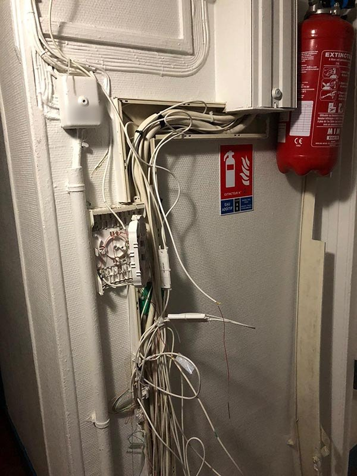
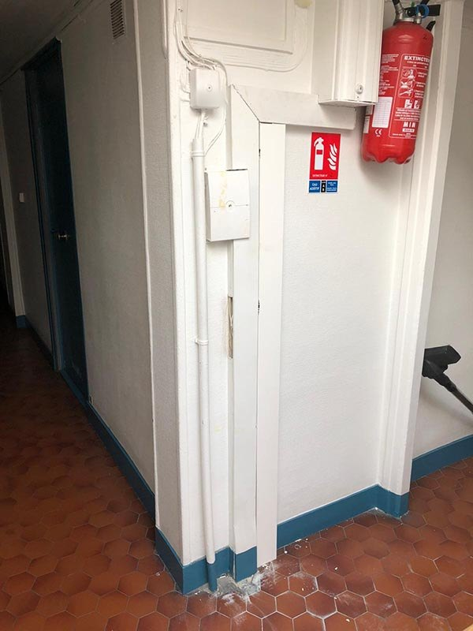

Une goulotte qui bâille le long d’une porte palière, des fils qui dépassent au ras des tomettes : tout l’immeuble passe devant chaque jour. Début 2023, dans un immeuble parisien en copropriété, à trois escaliers, nous avons remis en état les goulottes électriques des parties communes. Le chantier en photos, puis ce que disent les textes.
En bref
- En copropriété, l’électricité des parties communes, hors colonnes montantes, relève en principe du syndicat des copropriétaires : le syndic la fait entretenir et réparer, et les travaux nécessaires à la sécurité des occupants, dont ceux sur les réseaux, se votent à la majorité de l’article 24.
- Le diagnostic électricité remis à la vente ou à la location porte sur les parties privatives du logement : les paliers et les autres parties communes n’en font pas partie.
- Exemple : début 2023, à Paris, nous avons remis en état les goulottes électriques des trois escaliers d’un immeuble, photos avant et après à l’appui.
Le point de départ
Un immeuble parisien, trois escaliers, des paliers aux sols en tomettes. Dans les parties communes, les câbles électriques passent dans des goulottes, ces conduits qui les protègent le long des murs et des encadrements de portes. Sur plusieurs paliers, elles étaient déformées, entrouvertes ou ouvertes en bas du mur, et les fils se voyaient.
En janvier 2023, nous avons visité les escaliers A, B et C, photos à l’appui. Le devis a suivi le même jour.


Ce que nous avons repris
Le chantier a porté sur les goulottes électriques défectueuses de tout l’immeuble, escaliers A, B et C :
- les goulottes encore en état ont été remises en place et refermées
- celles qui étaient trop abîmées ont été remplacées par des goulottes neuves, selon l’état de chaque étage
- les boîtiers ont été remis en place et les câbles rangés
Les travaux se sont terminés en mars 2023. Des photos avant et après, sur plusieurs points, étaient jointes à la facture, de quoi montrer au conseil syndical ce qui a été fait.
Nos travaux d’électricité dans les parties communes


Un chantier dans les paliers d’un immeuble habité
Un palier, c’est l’entrée des logements. Les occupants passent pendant les travaux, d’un étage à l’autre. Une goulotte ouverte laisse les fils à portée de main, dans un lieu de passage.
Le devis détaillait les travaux escalier par escalier. Les paliers sont restés protégés pendant le chantier, puis ont été nettoyés. Sur les photos, la différence se voit au premier coup d’œil : des goulottes droites et fermées, des boîtiers fixés, plus de fils apparents.
Deux autres points du même immeuble : avant les travaux en haut, après en bas.
Lors d’une visite de l’immeuble, quelques signes se repèrent vite sur les paliers :
- une goulotte déformée, entrouverte ou décollée du mur
- un capot manquant, en bas du mur ou autour d’une porte
- des fils visibles, ou un boîtier qui ne tient plus au mur
- des câbles de téléphone ou de télévision en paquet
Une photo de chaque point, avec l’escalier et l’étage, nous aide à préparer le devis.
A.T.C. BAT est une entreprise tous corps d’état. Dans les parties communes, nous intervenons sur l’électricité comme sur la plomberie, l’étanchéité ou la peinture des halls et des escaliers. Le jour de notre visite des paliers, nous faisions aussi une recherche de fuite dans le même immeuble.
Électricité, halls, plomberie : nos travaux pour les syndics
Rénover la cage d’escalier et le hall d’un immeuble : les étapes en copropriété
Électricité des parties communes : ce que prévoient les textes
Plusieurs documents de la copropriété parlent de l’état des parties communes :
- Le carnet d’entretien. Le syndic doit l’établir et le tenir à jour (loi du 10 juillet 1965, article 18). D’après Service Public, il mentionne notamment, quand c’est le cas, l’année des travaux importants et les entreprises qui les ont réalisés, les contrats d’entretien des équipements communs, et les travaux prévus au plan pluriannuel.
- Le diagnostic technique global. Il analyse l’état apparent des parties communes et des équipements communs, et leur état technique au regard des obligations légales et réglementaires. Pour une copropriété existante, il reste facultatif, et sa réalisation se vote à la majorité de l’article 24. Le maire ou le préfet peut toutefois le demander au syndic quand l’immeuble présente des désordres, pour vérifier l’état de bon usage et de sécurité des parties communes.
- Le projet de plan pluriannuel de travaux. Il concerne les copropriétés de plus de 15 ans comprenant des logements, avec une entrée en vigueur échelonnée de 2023 à 2025 selon le nombre de lots. D’après l’ANIL, il comprend notamment la liste des travaux nécessaires pour garder l’immeuble en bon état.
- Le diagnostic électricité remis lors d’une vente ou d’une location. Il porte sur les parties privatives du logement, en aval de l’appareil général de commande et de protection propre à ce logement. Les paliers n’en font pas partie.
Pour le vote, la loi range parmi les décisions prises à la majorité de l’article 24 les travaux nécessaires à la conservation de l’immeuble et à la sécurité des occupants, dont ceux qui portent sur les réseaux (loi du 10 juillet 1965, article 24).
Faire voter les travaux et choisir l’entreprise
Les colonnes montantes d’électricité sont un cas à part. Celles mises en service avant la loi du 23 novembre 2018 appartiennent en principe au réseau public de distribution d’électricité, sauf si les copropriétaires en ont revendiqué la propriété dans les deux ans qui ont suivi cette loi (Code de l’énergie, article L346-2).
Électricité, téléphone, câble : remettre de l’ordre dans les réseaux
Dans les parties communes, les câbles d’électricité, de téléphone et de télévision peuvent emprunter les mêmes chemins. Au fil des raccordements, ils finissent parfois en paquet sur un mur.
Sur un autre de nos chantiers, dans un couloir d’immeuble, avant et après : des fils de téléphone et des câbles en désordre à côté d’un extincteur, puis des câbles rangés dans des goulottes blanches.


Fils de téléphone et câbles en désordre près d’un extincteur, puis rangés dans des goulottes blanches.
Une précision pour le vote : d’après l’ANIL, l’installation ou la modification d’une antenne collective de télévision ou d’un réseau câblé se vote à la majorité de l’article 25.
Sources
- Légifrance, loi n° 65-557 du 10 juillet 1965 fixant le statut de la copropriété des immeubles bâtis, article 18, version en vigueur depuis le 11 avril 2024
- Légifrance, loi n° 65-557 du 10 juillet 1965, article 24, version en vigueur depuis le 18 juin 2025
- Légifrance, Code de l’énergie, article L346-2, version en vigueur depuis le 25 novembre 2018, consultée le 16 octobre 2026
- Service Public (DILA), « Carnet d’entretien de la copropriété », fiche F2665, vérifiée le 4 août 2026
- Service Public (DILA), « Diagnostic technique global (DTG) de la copropriété », fiche F32059, vérifiée le 16 octobre 2026
- Service Public (DILA), « Diagnostic immobilier : état de l’installation intérieure d’électricité », fiche F18692, vérifiée le 17 septembre 2026
- ANIL, « Travaux : de la prise de décision à la réalisation »
- ANIL, « Travaux et majorités »
Sources consultées le 14 novembre 2026. Cet article donne des repères généraux. Le règlement de copropriété et les textes en vigueur font foi.